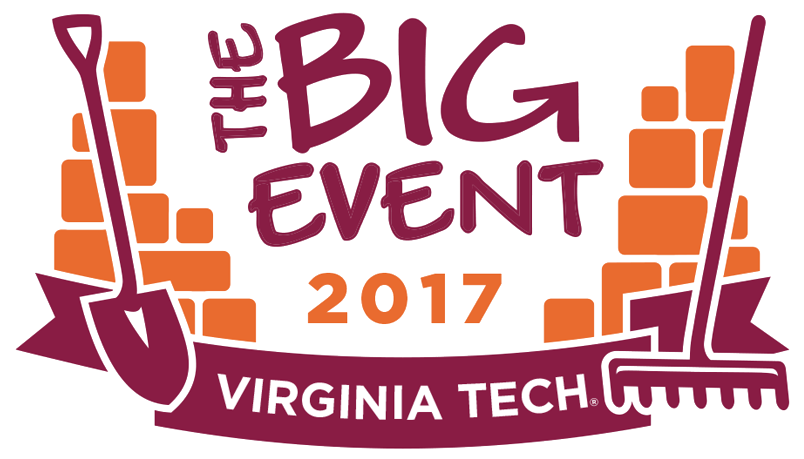

Before taking this course I did not believe that my interests intersected with digital writing at all. However, now I realize that some of my interests actually do intersect. I feel as though my English degree aligns with this skill more so than Finance, but both seem to have applicable uses. As an English major I could be creating content for websites, but I did not realize that HTML and some coding would be involved. Now that I know these may be used in my future, I am grateful to be learning the basics now. Even as a Finance major I could be needed to create website material or learn how to access it.
My extracurriculars also align with digital media in some respects. For my community service involvement it is beneficial to know how to operate a website and upload content accurately. For my sorority and club this is could become a good PR tool, if used correctly.
I view a VT-Shaped Student to be someone who is involved in campus activities and community service all while maintaining good academic standing. I believe that participating in activities outside of the classroom is where students gain the most insight and knowledge. Anyone can sit in a class and attempt to learn a subject, but it takes a truly motivated student to participate in learning outside of the classroom.
I also believe in Ut Prosim and try to exemplify it in my daily life. A VT-Shaped student is someone who will always lend a helping hand and volunteer for causes near to their heart. Virginia Tech students are very philanthropic and I think that sets us apart from most other schools. We are known for having the largest collegiate Relay for Life in the world for many years. We also have a very large event known as The Big Event, where all Tech students have the chance to give back to the Blacksburg community. Those in Greek life also have a day reserved for giving back to the community known as Greeks Giving Back. With all of these events there are plenty of chances for any VT student to give back and lead at VT-Shaped lifestyle.
